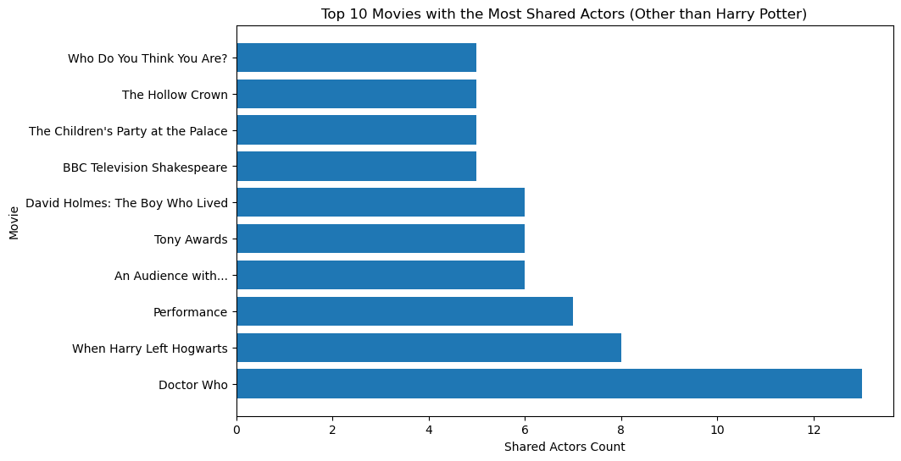

import scrapy
class TmdbSpider(scrapy.Spider):
name = 'tmdb_spider'
def __init__(self, subdir=None, *args, **kwargs):
self.start_urls = [f"https://www.themoviedb.org/movie/{subdir}/"]In this blog post, I will show you how to web scrape but I am going to create my own movie scraper. I will going to create TmdbSpider class which will scrape all the casts and the movies that the casts were in. To do so, I will create 3 different parse and the output will be saved in a seperate csv file.
Setup and Overview
The TMDB page we are going to use is https://www.themoviedb.org/movie/671-harry-potter-and-the-philosopher-s-stone/ which is Harry Potter and the Philosopher’s Stone.
We will first look through how the website looks like. Once you choose the movie, you can find the Full Cast & Crew link. Yhis will lead to page
(original_url)cast/
If you scroll down, you will see the Cast section. If you click one of those, Alan Rickman, for example, then the full URL is going to be
https://www.themoviedb.org/person/4566-alan-rickman
Once you get into the actors’s page, you will see the list of the actors’ acting, crew, production, (etc..) list.
Write the Scraper
Now we will write a scraper using the scrapy.
The basic format of the scraper look like :
Along here, we need to implement three parsing methods for the TmdbSpider class, which are parse(self, response), parse_full_credits(self, response), parse_actor_page(self, response).
parse(self, response)
Instruction :
parse(self, response) should assume that you start on a movie page, and then navigate to the Full Cast & Crew page. Remember that this page has url
def parse(self, response):
# Make the full cast URL by adding "/cast"
full_cast_url = response.url + "/cast"
# Yield a new scrapy.Request for the cast URL, and use the callback method to handle the response
yield scrapy.Request(full_cast_url, callback=self.parse_full_credits)The first method is pretty clear. We start from the movie main page. What this method have to do is to navigate to the Full Cast & Crew page. Once you click the page in the website, you can find out the page URL is just
(original_url)cast/Therefore what we need to do here is to just add cast/ to the initial URL we have and yield a Request by spider’s callback. We can specify what should happen when we get there as a callback, which is to yielded scrapy.Request.
def parse_full_credits(self, response)
Instruction :
parse_full_credits(self, response) should assume that you start on the Full Cast & Crew page. Its purpose is to yield a scrapy.Request for the page of each actor listed on the page. Crew members are not included. The yielded request should specify the method parse_actor_page(self, response) should be called when the actor’s page is reached. The parse_full_credits() method does not return any data. This method should be no more than 5 lines of code, excluding comments and docstrings.
def parse_full_credits(self, response):
# Use selectors to extract only the cast members, which does not have class 'crew'
cast = response.css('ol.people.credits:not(.crew)')
# Extract the 'href' links to the individual actor pages
hrefs = cast.css('div.info a::attr(href)').getall()
# Iterate for each actor page
for link in hrefs:
yield scrapy.Request(response.urljoin(link), callback=self.parse_actor_page)Now this method starts from the Full Cast & Crew page. We first need to request the page or each actor(only actor, not crew). Here we are going to use the selector. Each actor’s selector is in this format:
<div class="info">
<p><a href="/person/194-richard-harris">Richard Harris</a></p><p>
</p><p class="character">Albus Dumbledore
</p>
</div>However, not only actor has this format, but also crew has this format. So we have to look for higher class. Then we can find that the casting is under
<ol class="people credits ">and the crew is under
<ol class="people credits crew">So I first set the
cast = response.css('ol.people.credits:not(.crew)') and then set
hrefs = cast.css('div.info a::attr(href)').getall().since what we see is in a hyperlink format, I wrote as a::attr(href) under div class info. I used getall() because we need to navigate to all the cast.
The for loop is to navigate each of the cast’s page and here request and callback self.parse_actor_page.
def parse_actor_page(self, response):
Instruction :
parse_actor_page(self, response) should assume that you start on the page of an actor. It should yield a dictionary with two key-value pairs, of the form {“actor” : actor_name, “movie_or_TV_name” : movie_or_TV_name}. The method should yield one such dictionary for each of the movies or TV shows on which that actor has worked in an “Acting” role1. Note that you will need to determine both the name of the actor and the name of each movie or TV show. This method should be no more than 15 lines of code, excluding comments and docstrings.
def parse_actor_page(self, response):
# Extract actor's name from h2 tag class title
actor_name = response.css('h2.title ::text').get()
# Extract the table that follows the h3
acting_section = response.xpath("//h3[contains(text(), 'Acting')]/following-sibling::table[1]")
# Create a set to store movie titles.
unique_movies = set()
for movie in acting_section.css("tr"):
# Extract the text, which is the movie name
movie_name = movie.css('td a ::text').get()
# Add the movie name to the set if it is not already in the set
if movie_name not in unique_movies:
unique_movies.add(movie_name)
yield {
'actor': actor_name,
'movie_or_TV_name': movie_name
}
We start from actor’s page. First we will going to extract the actor’s name by calling
actor_name = response.css('h2.title ::text').get()The name is in h2.title format. So we extract just the text by ::text.
Next we need to find what movie they acted in. We should only yield movies or TV shows on which that actor has worked in an “Acting” role. However, “Acting”, “crew”, “Production” are all under same
<tbody><tr>
<td>
<table class="credit_group">
<tbody><tr>
<td class="year">—</td>
<td class="seperator"><span data-url="/tv/44337" data-id="52596773760ee346619c97e4" data-type="tv" data-slug="44337" class="glyphicons_v2 circle-empty account_adult_false item_adult_false"></span></td>
<td class="role true account_adult_false item_adult_false">
<a class="tooltip" href="/tv/44337"><bdi>Have I Got a Bit More News for You</bdi></a>
<span class="group"> <span>(<a class="tv" href="/tv/44337/episodes?credit_id=5bce0b02c3a3683d6f000fd7&person_id=4bc89155017a3c122d00c255">2 episodes</a>)</span> as <span class="character">Self - Presenter</span></span>
</td>
</tr>
</tbody></table>
</td>
</tr>
</tbody>
The only thing that is different is each acting, crew or production are under the different h3 class zero title.
<h3 class="zero">Acting</h3>
<h3 class="zero">Crew</h3>
<h3 class="zero">Production</h3>However, the tables are not under these selectors, but the tables follow right after the titles. So we can extract the ‘Acting’ section by selecting the table right after this class.
acting_section = response.xpath("//h3[contains(text(), 'Acting')]/following-sibling::table[1]")Filter the previously selected h3 elements. It selects only those content that contains the word “Acting”. And then find siblings that come after the selected node and select the first table element that is a following sibling of the h3 element containing the word “Acting”.
In this way we can get the movie name of only “Acting”.
Run the Scraper
Now we can run the following command in the terminal inside the directory you want.
scrapy crawl tmdb_spider -o results.csv -a subdir=671-harry-potter-and-the-philosopher-s-stoneThis command will make a csv file named results in the folder you want.
Make the Recommendations
Based on the data of actors and the movie they acted in, we can make a recommandation of the specific movie(here it is Harry Potter and the Philosopher’s Stone).
import pandas as pd
# Load the CSV file
results_df = pd.read_csv('/Users/gimdong-gyu/Desktop/TMDB_scraper/results.csv')
results_df| actor | movie_or_TV_name | |
|---|---|---|
| 0 | Daniel Radcliffe | Have I Got a Bit More News for You |
| 1 | Daniel Radcliffe | David Holmes: The Boy Who Lived |
| 2 | Daniel Radcliffe | 100 Years of Warner Bros. |
| 3 | Daniel Radcliffe | Mulligan |
| 4 | Daniel Radcliffe | Digman! |
| ... | ... | ... |
| 2917 | Rupert Grint | The View |
| 2918 | Rupert Grint | GMTV |
| 2919 | Rupert Grint | The Tonight Show with Jay Leno |
| 2920 | Rupert Grint | An Audience with... |
| 2921 | Rupert Grint | Today |
2922 rows × 2 columns
We can see there are 2922 rows, which means there are total 2922 movies that every cast had a roll in.
But we need to group those actors that were in the same movie and count them in order to see which movie has the most shared actor. Also we can make a recommandation based on the most shared movies.
# group by the 'movie_or_TV_name' and count the number of unique actors.
shared_actors = results_df.groupby('movie_or_TV_name')['actor'].nunique().reset_index()
shared_actors.columns = ['movie names', 'number of shared actors']
# Sort by the number of shared actors
shared_sorted = shared_actors.sort_values(by='number of shared actors', ascending=False)
shared_sorted| movie names | number of shared actors | |
|---|---|---|
| 700 | Harry Potter and the Philosopher's Stone | 63 |
| 694 | Harry Potter and the Chamber of Secrets | 37 |
| 382 | Creating the World of Harry Potter | 36 |
| 701 | Harry Potter and the Prisoner of Azkaban | 26 |
| 699 | Harry Potter and the Order of the Phoenix | 24 |
| ... | ... | ... |
| 796 | Indiana Jones and the Kingdom of the Crystal S... | 1 |
| 795 | Indian Summers | 1 |
| 794 | In the Red | 1 |
| 793 | In the Heart of the Sea | 1 |
| 2273 | Zastrozzi: A Romance | 1 |
2274 rows × 2 columns
Now we want to visualize the top 10 movies that shows the most shared actors. To do this, We can use matplotlib to create a bar chart
import matplotlib.pyplot as plt
# Get the top 10 movies/TV shows
top10 = shared_sorted.head(10)
# Plotting the bar chart
plt.figure(figsize=(10, 6))
plt.barh(top10['movie names'], top10['number of shared actors'])
plt.title('Top 10 Movies with the Most Shared Actors')
plt.xlabel('Count')
plt.ylabel('Movie')
plt.show()Based on the graph, we can see that the Harry Potter and the Chamber of Secrets is the movie that has most shared actors with Harry Potter and the Philosopher’s Stone.
However, this recommandation is not really useful because Except for one movie, those movies in top 10 are all Harry Potter Series.
Therefor We will make a seperate recommandation plot other than Harry Potter Series.
Recommandation Other than Harry Potter Series
# Remove movies that contain "Harry Potter" in the title.
no_harry = shared_sorted[~shared_sorted['movie names'].str.contains('Harry Potter')]
top10 = no_harry.head(10)
plt.figure(figsize=(10, 6))
plt.barh(top10['movie names'], top10['number of shared actors'])
plt.title('Top 10 Movies with the Most Shared Actors (Other than Harry Potter)')
plt.xlabel('Count')
plt.ylabel('Movie')
plt.show()
From the plot, now we can see that the most most shared actor movie is Doctor Who and all the movies in the top 10 is now not Harry Potter Series.
Conclusion
In this post, we looked through how we can apply scrapy to make a recommandation system. Web Scraping is a powerful tool to gather various data from the web.